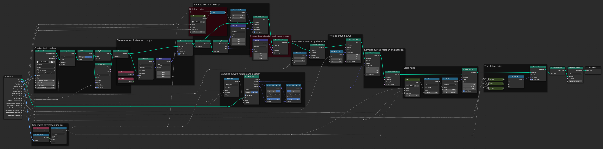

Jolyne's Thread - Procedural Asset Generation
This project, inspired by Jolyne Cujoh from JoJo's Bizarre Adventure: Stone Ocean, set out to create a system that allows artists and animators to create and manipulate threads dynamically in Blender using geometry nodes. The project was a deep dive into procedural asset generation, where I learned how to develop tools that serve the creative needs of end users and artists.
For a detailed insight into my process, feel free to peruse my project journal here!
Technical Implementation
The project was implemented through a blend of unique techniques:
- Bézier Curves and Geometry Nodes: I used Blender's geometry nodes to create a system allowing for the generation and manipulation of thread paths and procedural text.
- Dynamic Mesh Creation: The thread is represented as a dynamic mesh, which adapts in real-time to changes in the spline.
- Interactivity and Control: I implemented a wide array of editable variables within Blender's node editor. These allow the artist to easily change things such as radius and graphic fidelity, as well as text settings like positioning, spacing, rotation, scaling, and animated noise values.
The thread asset had to adapt to changes in real-time, be visually consistent, and above all, be intuitive for artists to use. Ensuring the tool lived up to these standards involved breaking down complex problems into their component parts, tackling vector math, and mastering Blender's toolset.
Visualizations
Future Plans
In the future, I'm planning to add another layer of abstraction to the thread mesh and have the thread itself follow a curve, making it more intuitive for artists. Further enhancements include improving the texture mapping algorithm for a more visually appealing thread.
The largest problem at the moment is that the number of control points must remain constant for the duration of the animation, and any new points made in the editor must be added at the end. In the future I think that this could be solved using a different different type of curve, most likely custom-made.
Download the Asset
To make use of the asset in your own projects, feel free to download it here!
JolyneThread.blendGoing Forward
This project was a unique journey into procedural asset generation, challenging me to develop artist-friendly tools. I look forward to exploring further in the realms of asset generation and tool creation.
